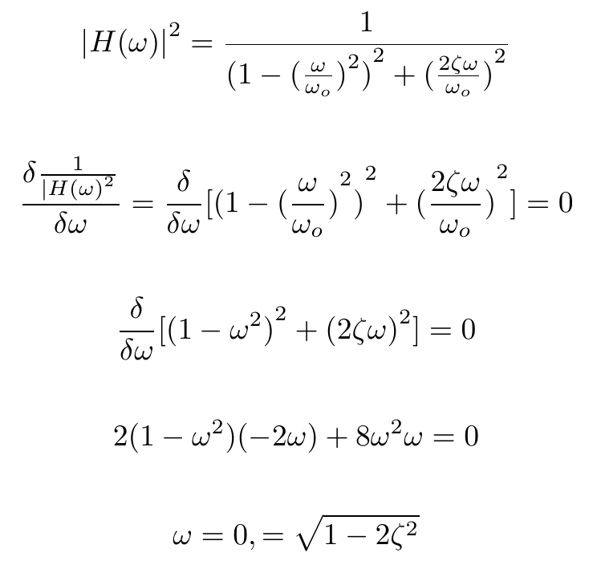
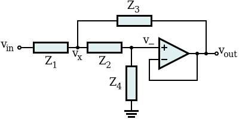
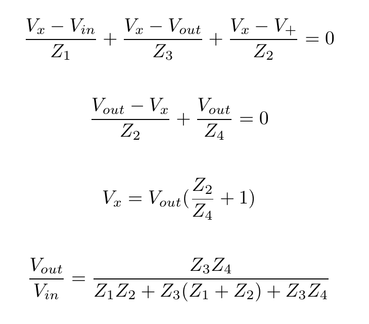
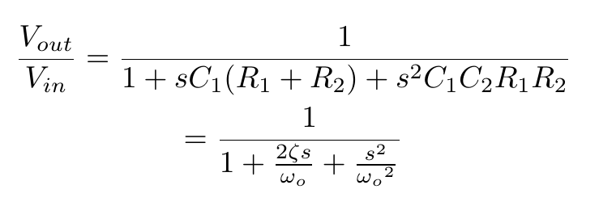
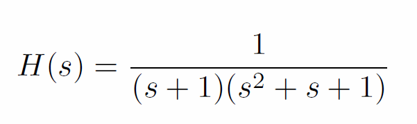
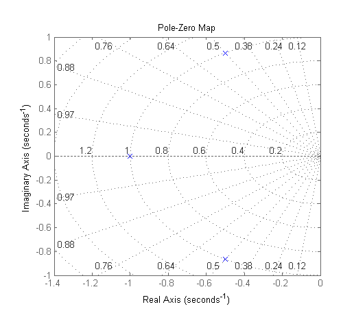
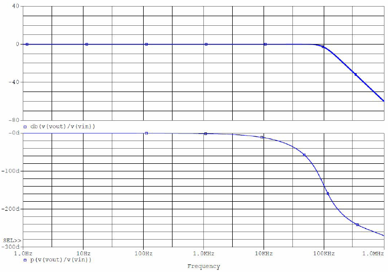
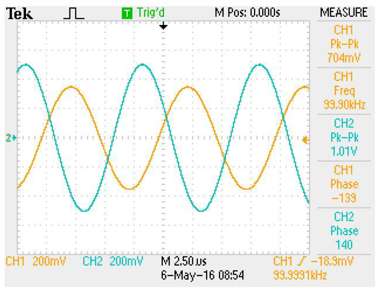
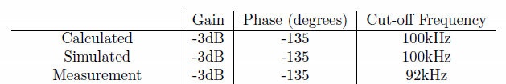

A 3rd-order Butterworth filter is a maximally flat filter with -60dB/decade roll-off. This implementation is derived from a cascade of a 2nd-order active filter and a 1st-order passive filter.
The 2nd-order Butterworth filter can be derived as follows:  Since ω must equal zero, ζ = 1/√2.
The Sallen-Key topology is a means of realizing a 2nd-order active filter with the following
structure:

The generic derivation of the Sallen-Key transfer function is:

This transfer function allows a variety of filters to be implemented simply by changing the
types of the components. In this instance, Z1 and Z2 are chosen to be
resistors and Z3 and Z4 are chosen to be capacitors. This arrangement
creates a 2nd-order low-pass filter. The characteristics of this filter can then be matched
to a Butterworth filter of the desired cut-off frequency.

The components of the Sallen-Key filter can be calculated for C1 = kC2 and R1 = R2. k(RC)2 = 1/(ωo)2, 2kRC = 1/ωo. For a 100kHz cut-off frequency, let R = 10kΩ and the other component values become equal to C = C1 = 318.31pF and C2 = 79.577pF.
There is now a maximally-flat 2nd-order filter. To produce a maximally-flat, 3rd-order filter, another 1st-order stage can be cascaded with the output of the 2nd-order filter. This stage is a simple RC low-pass filter. For a cut-off frequency of 100kHz, the component values for this filter can be found with ωo = 1/(R3C3). Letting R3 = 10kΩ gives C3 = 159.1549pF.
The transfer function for this filter:  produces the pole-zero plot:  Since all of the poles are in the left-half plane, the filter is stable. It can also be noted that the angle separating the poles can be described by 180°/N where N is the order of the filter.
 The maximally-flat behavior can be observed in the pass-band with the -60db/decade roll-off after 100kHz.
 The attenuation at 100kHz is slightly less than -3dB. This can be attributed to variance in the components used to assemble the filter from the values used in the design phase. 